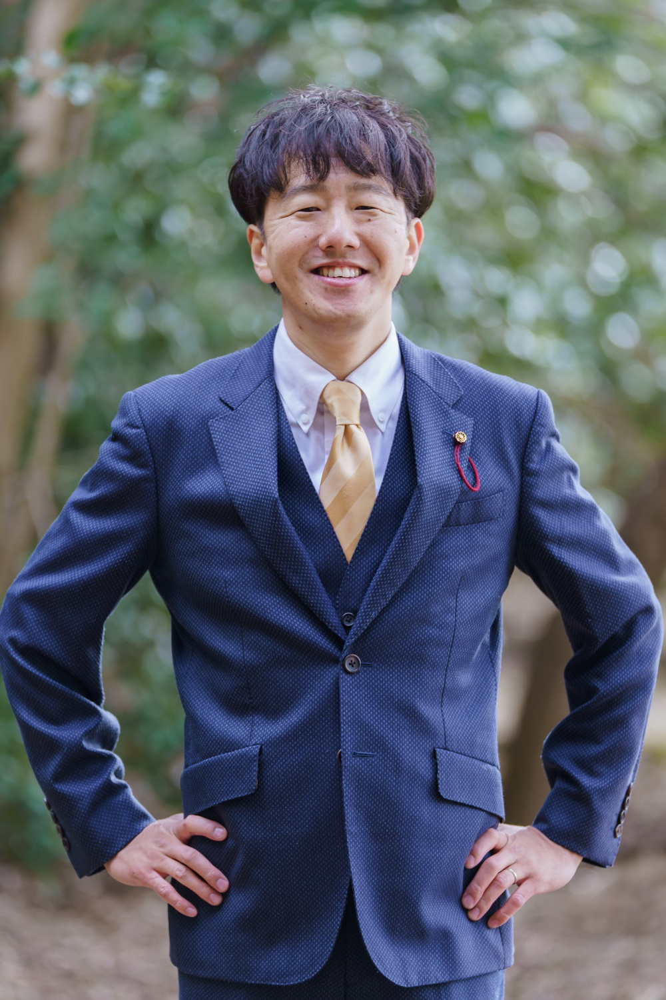
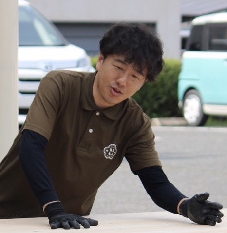
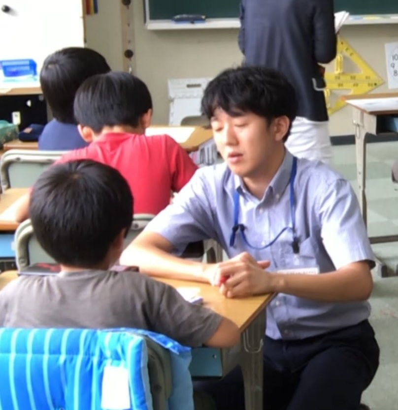
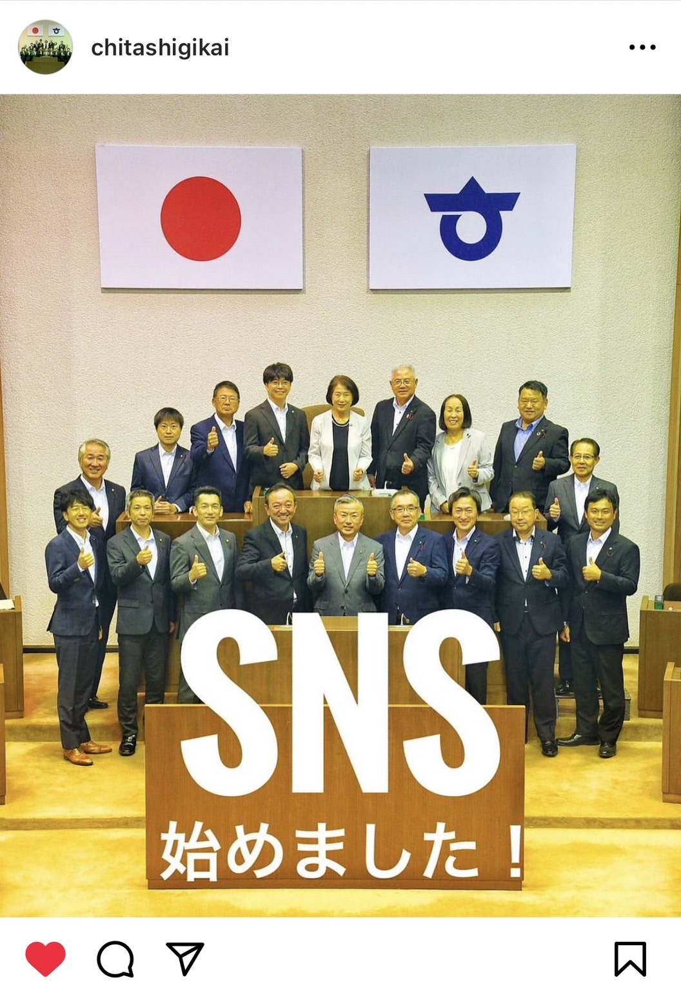
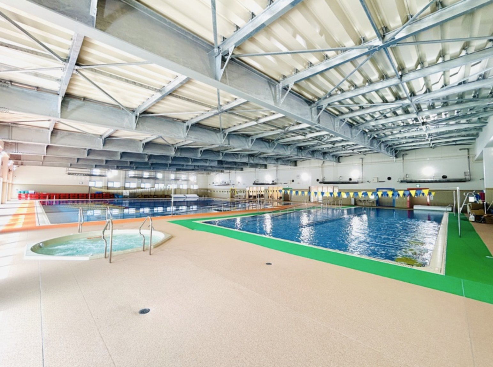
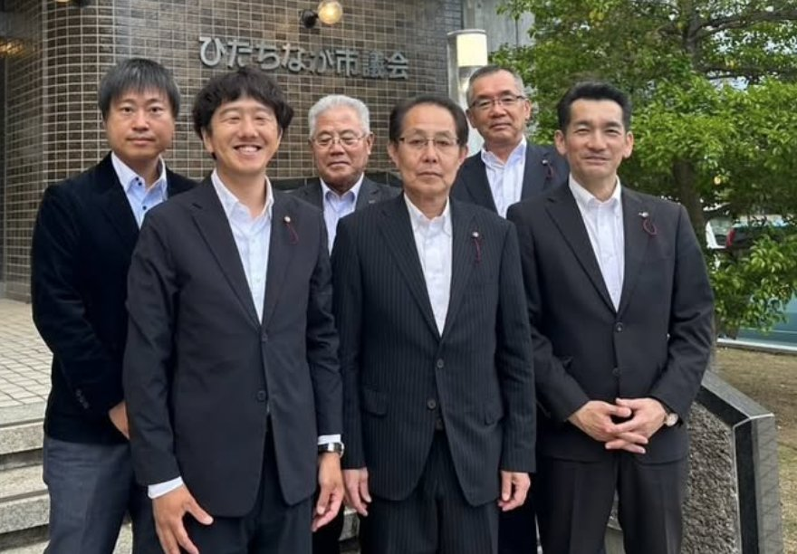
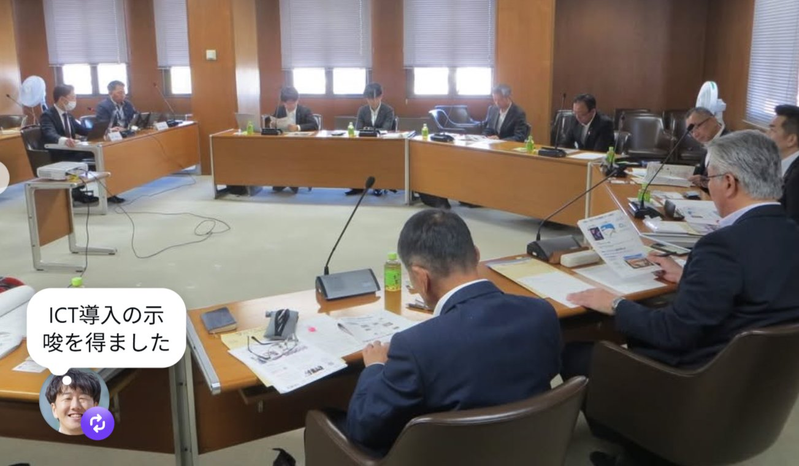
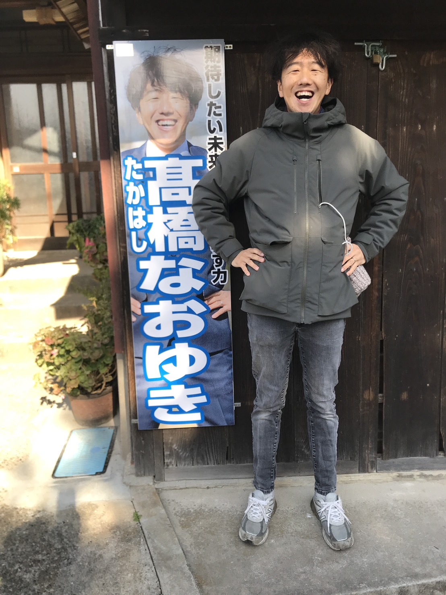
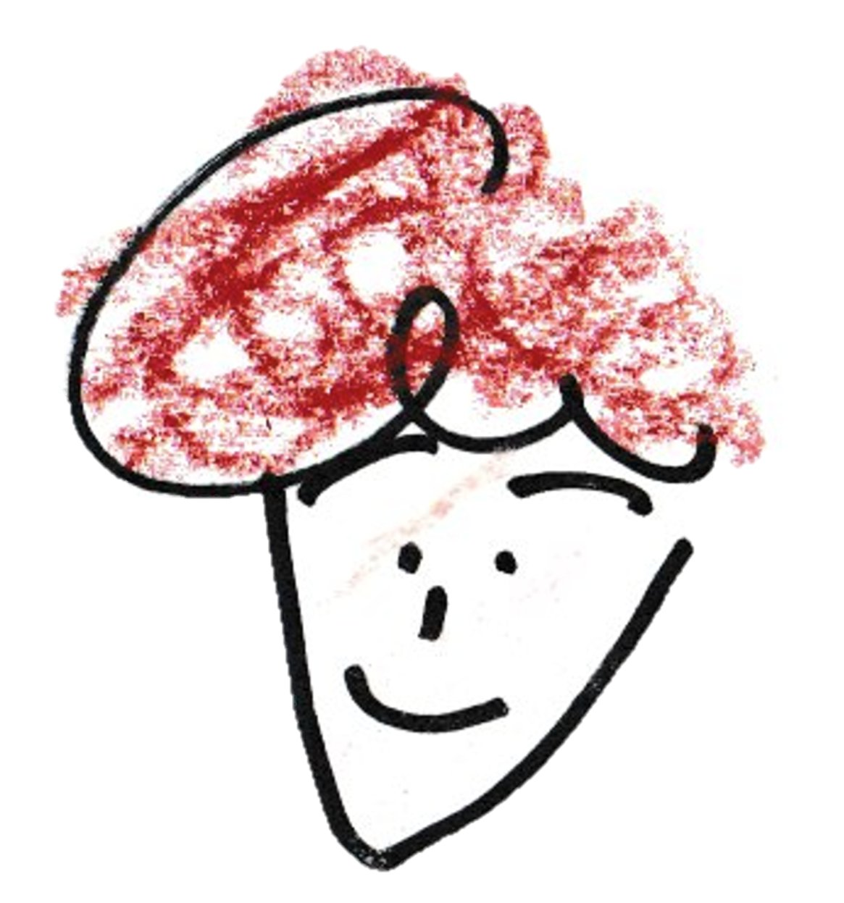

たかはし なおゆき ／ 知多市議会議員
「どうなる」ではなく「どうする」知多市を。
元小学校教員・便利屋・2児の父。
草刈りの現場でも、議会の質問席でも、
同じ目線で知多市の暮らしと向き合う。
生活の小さな声を、まちの力に変えていく。



草が伸びた道、老朽化した学校施設、
地域行事を支え続ける人たちの苦労。
でもそこには、大切に思う人しかいない。
そうした現場に、ずっと向き合っています。
愛知教育大学大学院を修了後、小学校教員として子どもたちと向き合ってきました。教員として、日々を過ごしているある日、庭木や雑草が伸びた空き家のような通学路にある家から一人の高齢の方が出てきたことが、地域の課題へ目を向ける一歩でした。総合的な学習は、自分のライフスタイル。今でも地域に出て総合的な学習の実践を行っているという意味では、何も変わっていません。
現在は便利屋「知多なおゆきサポート」として、草刈り・伐採・不用品整理・害獣駆除・外構相談など、地域の暮らしの困りごとに直接向き合っています。この仕事を通じて見える「高齢者の暮らし」「空き家問題」「住環境の小さな不便」が、議会での発言の根拠になっています。
妻と2人の子どもと大草で暮らし、地域行事、青年会議所、まちづくり活動にも携わってきました。音楽が好きで、ギターを弾きます。新舞子マリンパークを活かした音楽フェス構想など、地域に文化の風景をつくる挑戦も続けています。
| 生年 | 1985年（昭和60年）生まれ |
| 出身 | 愛知県東海市荒尾町 |
| 住所 | 愛知県知多市大草字四方田 |
| 学歴 | 横須賀高校 → 愛知教育大学 → 愛知教育大学大学院 修了（教育学・修士） |
| 専門 | 教育学・スタートカリキュラム研究・国語（専修免許） |
| 仕事 | 知多市議会議員 ／ 便利屋「知多なおゆきサポート」代表 |
| 委員会 | 建設経済委員会（副委員長）・議会運営委員会（委員） |
| 連絡先 | 080-3069-7741 |
議員として活動する中で、常に意識している3つのことがあります。
市役所の資料だけでなく、実際に現地へ足を運びます。道路、公園、学校、住宅地。現場で見て、聞いて、感じた違和感を議会の質問と提案につなげています。
ただ応援するだけでも、ただ否定するだけでも終わりません。実行可能性・課題・リスク・合意形成を丁寧に確認しながら、期待したい未来に向けて議論を前に進める役割を担います。
市民の困りごとは最初から大きな政策課題として見えるわけではありません。「駐車場が足りない」「子どもの居場所が少ない」。そうした声の積み重ねが、まちの課題になります。
知多市の現場で見えてきた課題と可能性。5つのテーマで取り組んでいます。

議会活動をSNSで市民に届けるため、知多市議会の公式Instagram（@chitashigikai）開設を提案・実現。あわせて「ちた市議会だより」190号より表紙デザインを担当し、より読みやすく親しまれる広報誌へと刷新しました。

令和6年12月議会「アクアマリンプラザにおける水泳指導について」で学校教育における水泳指導の課題を整理し、一般質問を行いました。インストラクターと監視員を配置し、小学校学習指導要領をもとに年間指導計画を策定。教職員と連携した安心・安全な水泳授業の実施を実現しました。

5月13日に茨城県ひたちなか市（佐和駅周辺整備事業）、14日に静岡県島田市（賑わい交流拠点「KADODE OOIGAWA」）を視察。安全・利便性向上と官民連携による地域振興の取り組みを学びました。詳細は「ちた市議会だより201号」（令和8年8月1日発行予定）に掲載予定です。

新庁舎建設に伴う議会ICT化に向け、両市のICT環境・端末選定・ペーパーレス会議システム・グループウェア活用状況を視察。委員会メンバーとともに議場での使用イメージの解像度を上げながら、導入に向けた仕様を研究しています。
建設経済委員会の副委員長として、道路・公共施設・地域経済の議案を審議。現場で見た違和感を議会の質問につなげています。
資料を読むだけでなく、実際に現地へ。道路の危険箇所、学校施設の状況、まちの変化を自分の目で確かめます。
「知多なおゆきサポート」として草刈り・伐採・不用品整理などに対応。生活の困りごとを、議会の言葉に変えます。
知多市議会Instagram開設を提案・実現。議会だよりの表紙デザインも担当し、市民に届く広報を推進しています。
大草・旭南地区の盆踊りや地域の集まりに参加。青年会議所・まちづくり活動を通じて地域の人と一緒に動いています。
新舞子マリンパークを活用した音楽フェス構想など、地域に文化と人のつながりを生む場をつくる挑戦を続けています。

政治家の言葉より、
生活者の感覚を大切に。
学生時代、音楽や文学・評論に影響を受け、言葉一つで感情が大きく揺さぶられた経験から国語の教員免許を取得。「言葉の重み」を政治の場でも大切にしています。
ギターを弾き、バンドや音楽文化への関心から「まちに音楽のある風景をつくりたい」と考えています。文化や表現を通じた人と人のつながりを大切にしています。
子どもを連れて歩く通学路、家族で行く公園、地域の盆踊り。父親として感じる「子どもが安心して過ごせるまち」への思いが政策の原点です。
結婚を機に大草のオーシャンビューのロケーションに引っ越しました。時々刻々と変化する目の前の海は、日々の癒しであり、生活の質と心の余裕を高めてくれます。実は、小学校の時に自転車で旅に出た先が今の住んでいる、大草でした。
行政任せでも、批判だけでも、まちは前に進みません。市民、地域、事業者、行政、議会が、それぞれの役割を持って動くことが大切だと思っています。
私は議員ですが、同時に、草刈りをする便利屋であり、子どもを連れて公園に行く父親であり、地域の盆踊りに参加する地域の一員です。その立場から、現場の声を受け止め、議論を整理し、実行に近づける役割を果たしたいと思っています。
「知多市をもっと良くしたい」という思いは、特別な人だけのものではありません。日々の暮らしの中にある違和感や願いを、まちづくりにつなげていきたい。議会の中だけではなく、地域の現場で、皆さんと一緒に考え、動いていきます。
